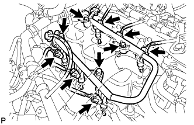
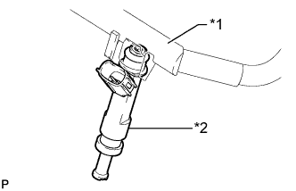
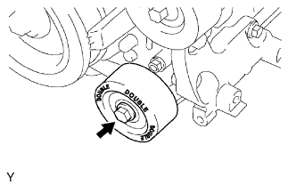
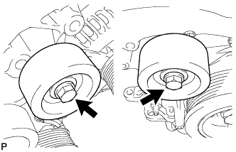
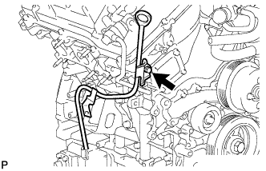

БЛОК ДВИГАТЕЛЯ > СНЯТИЕ |
| 1. СНИМИТЕ ЖГУТ ЭЛЕКТРОПРОВОДКИ ДВИГАТЕЛЯ |
| 2. ОТСОЕДИНИТЕ ПАТРУБОК ОТОПИТЕЛЯ В СБОРЕ |
Для моделей без подогревателя:
Отсоедините 2 шланга и снимите патрубок отопителя в сборе.
| *A | Для моделей без подогревателя |
| *B | Для моделей с подогревателем |
Для моделей с подогревателем:
Отсоедините 3 шланга и снимите патрубок отопителя в сборе.
| 3. СНИМИТЕ КОМПЛЕКТ КЛАПАНА СИСТЕМЫ СНИЖЕНИЯ ТОКСИЧНОСТИ ОТРАБОТАВШИХ ГАЗОВ (для моделей со вспомогательной системой подачи воздуха в нейтрализатор) |
 |
Отверните 3 гайки и снимите комплект клапана системы снижения токсичности отработавших газов.
| 4. СНИМИТЕ КОМПЛЕКТ КЛАПАНА СИСТЕМЫ СНИЖЕНИЯ ТОКСИЧНОСТИ ОТРАБОТАВШИХ ГАЗОВ № 2 (для моделей со вспомогательной системой подачи воздуха в нейтрализатор) |
 |
Отверните 3 гайки и снимите комплект клапана системы снижения токсичности отработавших газов № 2.
| 5. СНИМИТЕ КАТУШКУ ЗАЖИГАНИЯ В СБОРЕ |
Выверните 6 болтов и снимите 6 катушек зажигания.
| 6. СНИМИТЕ ЗАДНЮЮ КРЫШКУ ГОЛОВКИ БЛОКА ЦИЛИНДРОВ |
 |
Выверните 3 болта и снимите крышку.
| 7. СНИМИТЕ ТОПЛИВОПРОВОД В СБОРЕ |
Отсоедините 2 топливопровода (Нажмите здесь).
Выверните 2 болта и снимите топливопроводы № 1 и № 2.
| 8. СНИМИТЕ ТОПЛИВНУЮ РАМПУ В СБОРЕ |
|  |
Отсоедините 6 разъемов топливных форсунок.
Выверните 4 болта и снимите топливную рампу вместе с 6 топливными форсунками.
| 9. СНИМИТЕ ТОПЛИВНУЮ ФОРСУНКУ В СБОРЕ |
|  |
Снимите 6 топливных форсунок с топливной рампы.
| *1 | Топливная рампа |
| *2 | Топливная форсунка |
Снимите кольцевое уплотнение и виброизолятор форсунки с каждой топливной форсунки.
| 10. СНИМИТЕ ВПУСКНОЙ КОЛЛЕКТОР |
 |
Отверните 4 гайки, выверните 6 болтов и снимите 2 прокладки.
| 11. СНИМИТЕ ПЕРЕПУСКНОЙ ПАТРУБОК ОХЛАЖДАЮЩЕЙ ЖИДКОСТИ В СБОРЕ (для моделей с масляным радиатором) |
 |
Отсоедините 2 патрубка.
Выверните 3 болта и снимите перепускную трубку охлаждающей жидкости.
| 12. СНИМИТЕ ОПОРНЫЙ РОЛИК № 1 В СБОРЕ |
|  |
Выверните болт и снимите опорный ролик № 1.
| 13. СНИМИТЕ ОПОРНЫЙ РОЛИК № 2 В СБОРЕ |
|  |
Для сидений со съемной обивкой:
Выверните 2 болта и снимите 2 крышки опорных роликов, 2 опорных ролика № 2 и 2 крышки опорных роликов № 2.
Для сидений с несъемной обивкой:
Выверните 2 болта и снимите 2 опорных ролика № 2.
| 14. СНИМИТЕ НАТЯЖИТЕЛЬ ПОЛИКЛИНОВОГО РЕМНЯ В СБОРЕ |
 |
Выверните 5 болтов и снимите натяжитель поликлинового ремня.
| 15. СНИМИТЕ ТРУБКУ ЩУПА ПРОВЕРКИ УРОВНЯ МАСЛА |
|  |
Снимите щуп проверки уровня масла.
Выверните болт и снимите трубку щупа проверки уровня масла.
Снимите кольцевое уплотнение с трубки щупа.
| 16. СНИМИТЕ ЛЕВЫЙ КРОНШТЕЙН ПЕРЕДНЕЙ ОПОРЫ ДВИГАТЕЛЯ № 1 |
Выверните 3 болта и снимите левый передний кронштейн опоры двигателя № 1.
| 17. СНИМИТЕ ПРАВЫЙ КРОНШТЕЙН ПЕРЕДНЕЙ ОПОРЫ ДВИГАТЕЛЯ № 1 |
Выверните 4 болта и снимите правый передний кронштейн опоры двигателя № 1.
| 18. СНИМИТЕ КОРОННУЮ ШЕСТЕРНЮ МАХОВИКА (для моделей с механической трансмиссией) |
 |
Равномерно прогрейте коронную шестерню с помощью горелки до температуры около 200°C (392°F).
Временно вверните в маховик 6 болтов (8 мм (0,315 дюйма) с шагом 1,25) длиной не менее 70 мм (2,76 дюйма).
Равномерно затяните 6 болтов в последовательности, показанной на рисунке.
Снимите коронную шестерню с маховика.